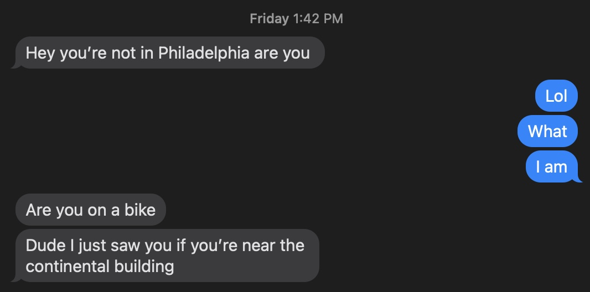
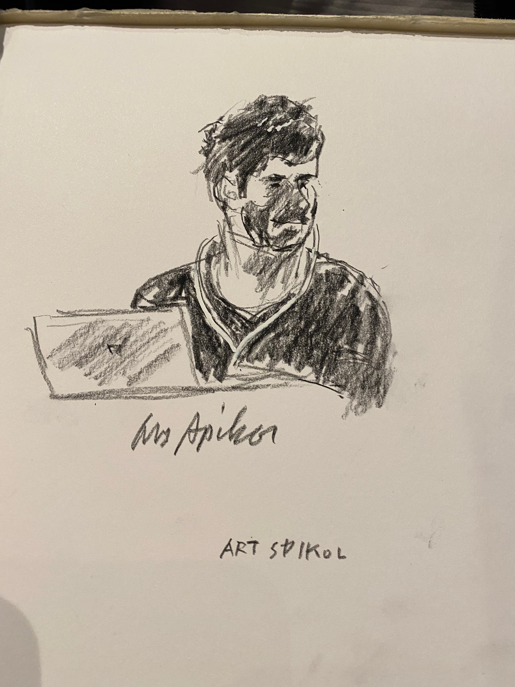
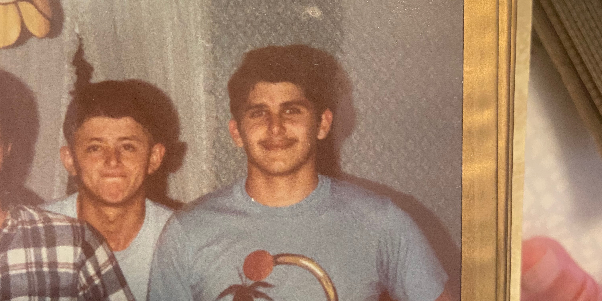

A lot has happened over the last seven days. And when a lot happens, I find it harder to write.
Since my last post, I’ve moved northward to Philadelphia, Trenton, and Princeton. Each was pleasant, though Trenton seemed incredibly underfunded and underdeveloped. The only pretty building was the Capitol, which felt frightfully Orwellian. I digress.
Let’s play catch up, in no order of excitement. (Or shall I say, joy?)
I got a job! For the coming months, I’ll be a Product Manager at Unity, a real-time development platform, where I’ll outfit their game engine for industries where the software can be socially impactful. Consider this my “announcement.” I have so far strayed from one of those horrid LinkedIn posts, and hope to keep it that way. (This is my blog, so I have relative freedom to admit whatever I wish: I’m especially terrible at LinkedIn, and am pretty jealous of the people that do it well. Maybe I'll cave and post something.)
Aside from Unity, I’ve been falling off my bike like mad. I’m still wearing the Chacos (obviously), so my feet are brutalized, and the nail on my pinky toe managed to fall off. Instead of a video of me falling again, here’s a video of another kid stumbling off my bike:
Hope you’re satisfied.
Another story: a few days ago, I was biking around the Liberty Bell, when I got a text from my friend Abby.
She and her family were connecting in Philadelphia on their way to Ann Arbor. Fortunately, their flight to Michigan got cancelled, so they had a day to check out Philly. While touring, they saw me.
After hugs and brief introductions, Dr. and Dr. Carey-Ewend invited me to dinner at Talula’s Garden. There, I ate one of the best meals I’ve ever had: a tagliatelle and mushroom appetizer, seared sea scallops on lemon risotto, Abby’s leftover pork belly and peaches, and three (!) cocktails, one of which was a spicy passionfruit Mezcal. We discussed our lives, pole dancing, and auction theory. The three-plus-hour dinner was immensely pleasant.
We did that thing where we say "bye" and then walk in the same direction. After that absurdity, I checked my phone, and saw that some of the guys with whom I was staying (Penn med students) were going out to a local brewery. I joined them, mainly to see what “going out with Penn medical students” was like. I’m glad I’m not in med school. (Jokes; it was fun.)
The next morning, I woke up with a slight headache, as you probably expected. I biked to La Colombe for a morning juice and iced latte, and sat myself between two old men. While I read, the guy on my right went up to the guy on my left: “Hey, this is for you.” The man turned around his sketch pad, introduced himself as Art––fitting––and tore off the page for the man to keep. It was a beautiful sketch, colored and all, of the man!
I audibly lauded the accuracy. I asked Art about his background, and he shared that he was formerly the art director for Philadelphia Magazine. And then he offered to sketch me.
Cool, right?
Soon after, I went to Philadelphia’s Zoomo location. Zoomo is the company I worked for this past summer, where, among other things, I designed a “security program” that requires employees to chase down stolen bikes. The method, ingenius and all, is now live at all their locations, across three continents.
For those curious, Zoomo is the origin of this trip as a whole: I fell in love with biking there, and I knew, no matter what, that I wanted to bike around the country after college. So, I planned a 730-mile trip along the East Coast Greenway, from North Carolina to New York.
Well, things didn’t go exactly as planned. Turns out Dennis, the director of the trail, was not only a UNC alumnus, but a former Morehead-Cain Scholar. After a few emails, a handful of 1-on-1 basketball games, and some Carrburritos, Dennis offered me a role to take bike- and trail-themed photos in the metro areas along the Atlantic. He said that biking straight there was too risky, so he encouraged me to Amtrak. The cost of Amtrak tickets for the journey was in the four-digits; meanwhile, if I brought my car, I could carry more and spend less. Hence, this trip was born.
Anyway, when I worked at Zoomo, they had only one shop in the U.S. Now, there are a handful of locations, including one in Philadelphia. So I stopped by, and asked a few stupid questions before admitting that I used to work at the company, and that my best friend was the shop's founder, Megan.
When they caught my name, they remembered that Megan had said I was the original “Bike Chaser.” Coincidentally, a bike had been stolen that day, and I was now in charge of snagging it back. Hours later, after scavenging north Philly and sitting in the back of a cop car, I traced down the bike. Ta-da––Philadelphia’s first bike recovery.
These stories––the job at Unity, dinner with Abby’s family, Art’s art, and being a Bike Chaser–-pale in comparison to the journey that dominated my week: meeting my family.
While en route to Philadelphia, I passed a sign for Lancaster, PA. I vaguely remembered that my dad spent time there growing up, so I called him, and asked if he still had any ties to the Amish town. It’s worth mentioning that my parents have always shown restraint when talking about my extended family. After all, to my and my siblings’ knowledge, we had just about no extended family in the U.S.
Wrong.
It turned out that my grandmother––in Arabic, sitto––lived there. And so did my dad’s brother. I had the most pleasant chat with them, and was able to flip through photos of my dad when he was younger. Take a look at this:
Since then, I've embarked to learn all that I can about my family, which I've chosen to keep off the inter-webs. Until next time...
{kind=link}
{kind=link}